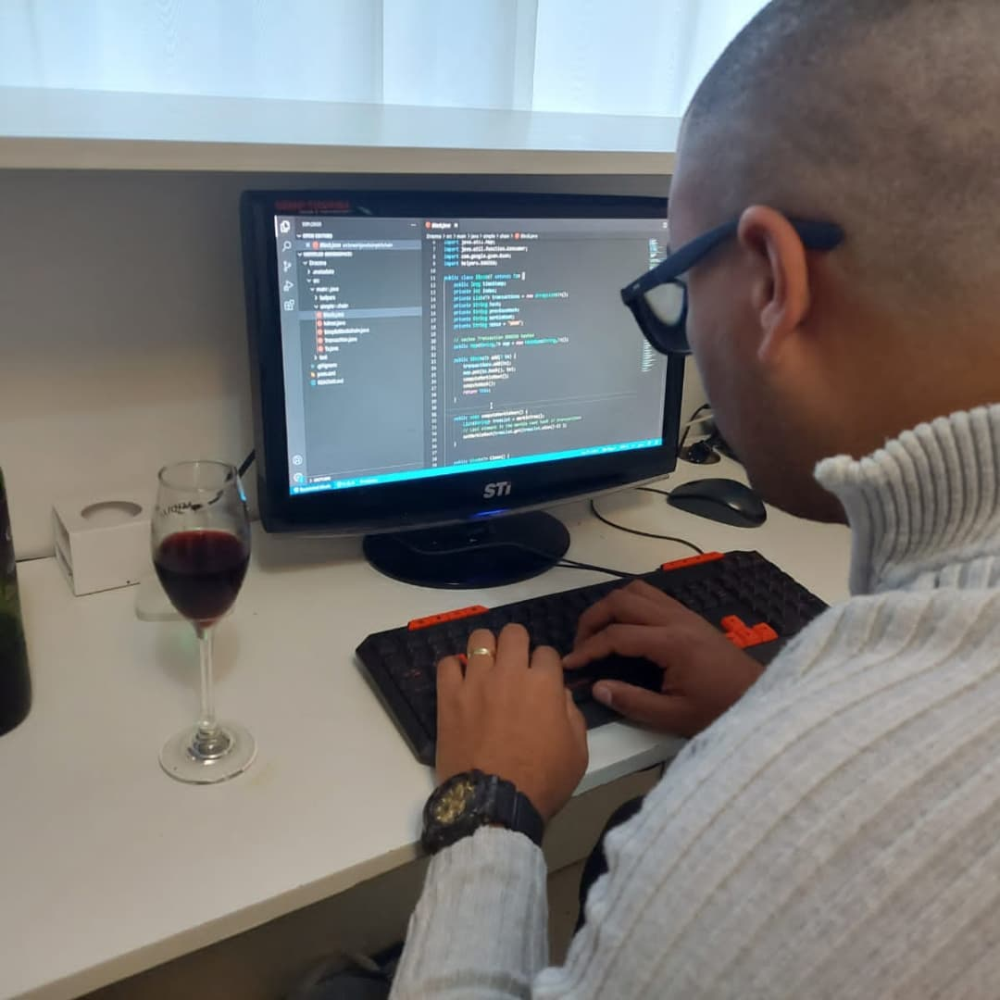
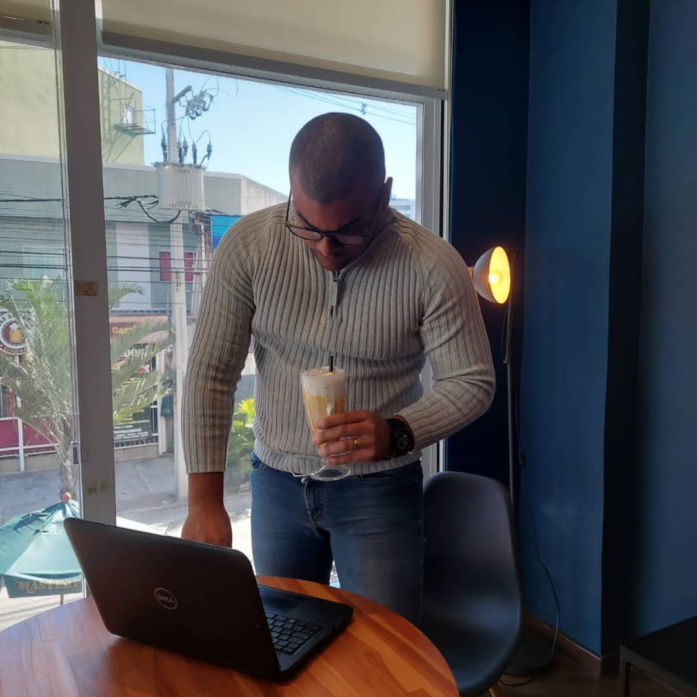

Alessandro Pessoa
Eu sou Cientista de Dados
Sobre
Transformo dados brutos em inteligência acionável. Com mais de 6 anos de experiência prática em Ciência de Dados e Machine Learning, construo soluções ponta a ponta — da arquitetura de dados ao deploy de modelos — sempre alinhadas à geração de valor para o negócio.

Data Scientist & AI Engineer
Minha trajetória começou em 2008 com cursos técnicos em redes e manutenção de computadores, evoluindo para Automação Industrial e atuação em empresas como PetroReconcavo, View Engenharia e Alstom Power. Em 2013, ingressei na Marinha do Brasil como especialista em Automação para o programa de submarinos nucleares.
A partir de 2016, direcionei minha carreira para desenvolvimento de software e IoT, criando sistemas web para integração de dispositivos industriais. Em 2019, migrei definitivamente para Ciência de Dados, área na qual obtive graduação, MBA e atualmente finalizo o Mestrado em Computação na UFF, com foco em Modelagem Neural e Processamento de Linguagem Natural.
Atualmente atuo como Cientista de Dados no CASNAV (Centro de Análises de Sistemas Navais), onde contribuo para o projeto DELFOS — um Sistema de Apoio à Decisão (SAD) estratégico para o Ministério da Defesa. Minha atuação envolve a construção de pipelines de dados, experimentação com modelos de IA e desenvolvimento de ferramentas de simulação, como o simulador de paraquedas apresentado no Rio Innovation Week 2025.
Apaixonado por resolver problemas complexos com rigor científico e boas práticas de engenharia. Acredito em times colaborativos, metodologias ágeis e na aplicação ética da Inteligência Artificial.
- Nascimento: 27 Fev 1991
- Localização: Rio de Janeiro, Brasil
- Idade: 33 anos
- Formação: Mestrando em Computação (UFF)
- Email: alessandro-pessoa@hotmail.com
- Freelance/Consultoria: Disponível
Errar pequeno, corrigir rápido e adaptar-se ao ambiente.
Hard Skills
Domínio avançado em Python e ecossistema de dados (Pandas, Scikit-learn, Spark, Kedro). Experiência sólida em desenvolvimento de pipelines MLOps, deploy de modelos, NLP com LLMs (fine‑tuning, RAG) e engenharia de software aplicada a dados.
Soft Skills
Capacidade analítica aguçada, comunicação clara e espírito de colaboração. Adaptabilidade e disciplina adquiridas em ambientes militares e industriais, aliadas à autonomia intelectual para aprendizado contínuo.
Trajetória Profissional & Acadêmica
Uma combinação de fundamentos técnicos sólidos, experiência em ambientes de missão crítica e especialização contínua em IA e dados.
Formação
Mestrado em Computação
2024 – 2026 (previsto)
Universidade Federal Fluminense (UFF)
Linha de pesquisa: Modelagem Neural e Processamento de Linguagem Natural. Desenvolvimento de soluções com LLMs para análise de ambiente informacional e operações da informação.
MBA em Ciência de Dados e Machine Learning
2023 – 2024
XP Educação
Projeto de conclusão: sistema de análise de ambiente informacional com modelos neurais para defesa nacional.
Graduação em Ciência de Dados
2021 – 2023
Universidade Anhanguera
Técnico em Automação e Controle Industrial
2010 – 2011
SENAI-CETIND (Bahia) – Bolsista PIBIT
Experiência Profissional
Cientista de Dados – CASNAV
2025 – Presente
Marinha do Brasil – Centro de Análises de Sistemas Navais
Atuação no projeto DELFOS, um Sistema de Apoio à Decisão (SAD) estratégico para o Ministério da Defesa. Responsável pela construção de pipelines de dados, experimentação com modelos de IA e desenvolvimento de ferramentas de simulação. Destaque para o Simulador de Paraquedas apresentado no Rio Innovation Week 2025. Saiba mais sobre o DELFOS.
Marinha do Brasil – CoNavOpEsp
2024 – 2025
Segundo Sargento – Desenvolvimento de soluções de IA para operações de informação
Pesquisa e implementação de LLMs para análise do ambiente informacional, contribuindo para operações psicológicas e defesa cibernética.
Marinha do Brasil (diversas OM)
2013 – 2024
Especialista em Automação Industrial
Atuação em manutenção de sistemas de controle, desenvolvimento de software para IoT e integração de sistemas navais.
Alstom Power
2013
Técnico em Automação Pleno
View Engenharia / PetroReconcavo
2011 – 2013
Técnico em Automação e Instrumentação
Programação de CLPs Siemens S7, manutenção de sistemas Foundation Fieldbus e projetos de instrumentação para indústria de petróleo.
Projetos, Publicações e Conquistas
Destaques da minha atuação em pesquisa aplicada, desenvolvimento de soluções e reconhecimentos recentes.
- Todos
- Projetos
- Publicações
- Conquistas


{kind=link}
{kind=link}
{kind=link}
{kind=link}
Demonstração em Vídeo
Conheça o Simulador de Paraquedas, ferramenta interativa desenvolvida para o projeto DELFOS e apresentada no Rio Innovation Week 2025.
Serviços & Consultoria
Transformo necessidades de negócio em soluções de dados robustas, escaláveis e éticas.
Modelagem Preditiva & Explicativa
Construção de modelos de machine learning com rigor estatístico, validação e explicabilidade para suporte à decisão.
Soluções com LLMs & RAG
Desenvolvimento de assistentes inteligentes, chatbots corporativos e sistemas de Q&A sobre bases de conhecimento proprietárias.
Arquitetura de Dados & MLOps
Criação de pipelines ETL/ELT, data lakes, versionamento de dados e modelos (DVC/MLflow) e deploy em containers.
Dashboards & Visualização de Dados
Construção de painéis interativos com Streamlit, Power BI ou soluções web customizadas para monitoramento de KPIs.
Conformidade LGPD em IA
Implementação de técnicas de desaprendizado de máquina (machine unlearning) para garantir o direito ao esquecimento.
Treinamentos Corporativos
Capacitação em análise de dados, boas práticas de machine learning e cultura data‑driven para equipes técnicas e de negócio.
Reconhecimento
Feedback de colegas, parceiros e instituições.
Contato
Vamos conversar sobre como posso ajudar seu projeto ou empresa.
Localização
Rio de Janeiro, Brasil
+55 21 96545-6006
alessandro-pessoa@hotmail.com